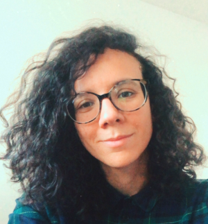

Post-doctorante (Humboldt fellow) à l'Université Louis-et-Maximilien de Munich ;
Docteur en Études latines : La notion d’archaïsme chez les grammairiens latins ; avec une édition commentée de l’œuvre fragmentaire de Flavius Caper, sous la direction d'Alessandro Garcea (Sorbonne Université) et de Paolo De Paolis (Università di Cassino) ;
Membre des projets Fragmentary Latin Grammarians (dir. Alessandro Garcea) et Spectacles d'écritures (dir. Chloé Ragazzoli et Carole Roche-Hawley). |
 |